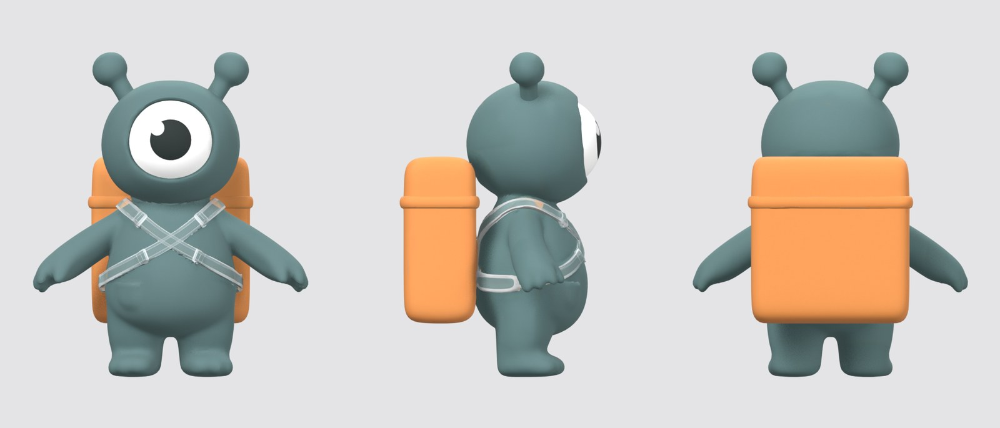
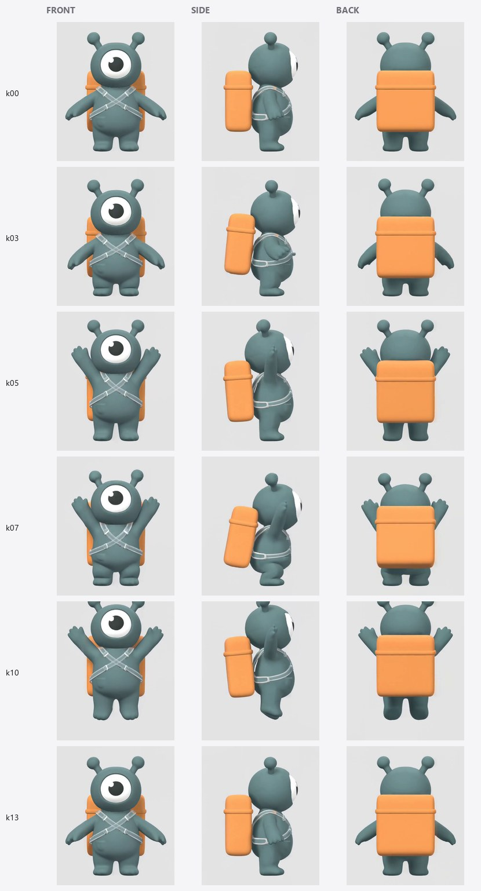
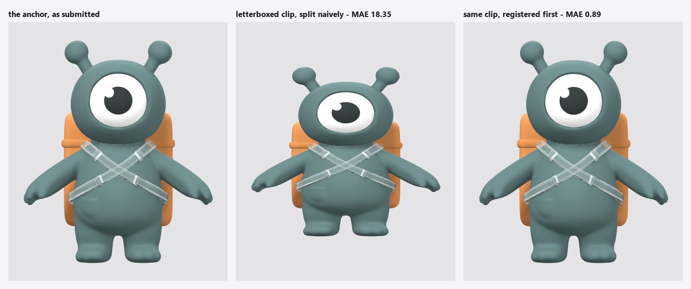
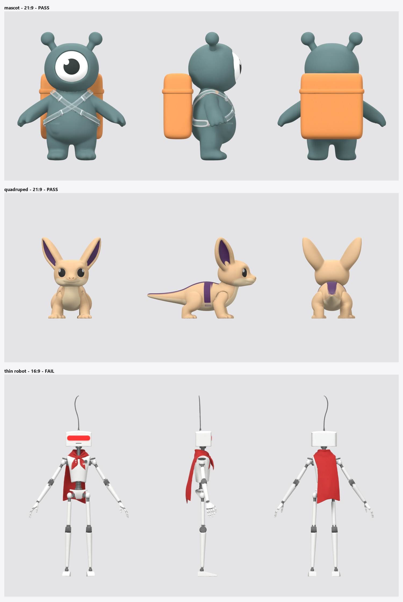
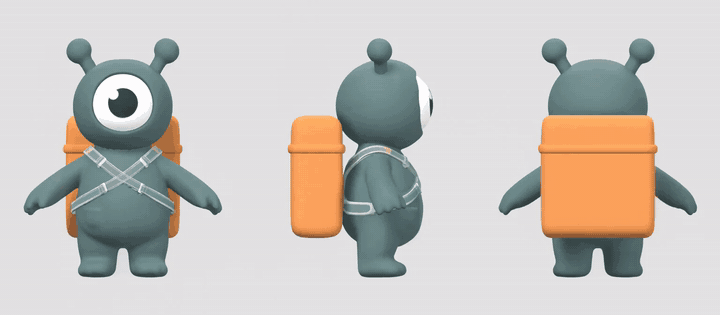
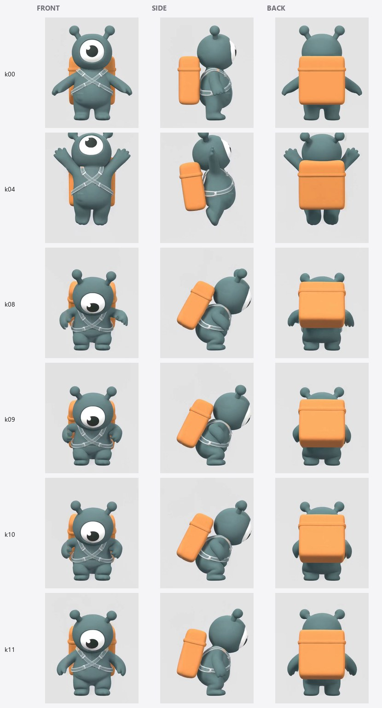
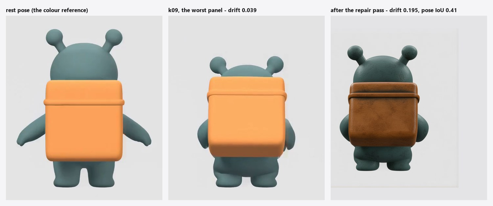

The problem
Three views of one pose have to agree, and generated views don't.
An auto-rigger does not have to infer motion from a sentence. Give it a rigged mesh and a sheet of keyframes drawn in orthographic views, and it can read the poses off the pictures instead — which is both more controllable and far less work than keyframing by hand.
Producing that sheet is the hard part. Asking an image model for front, then side, then back is three independent requests. They come back as three drawings of three slightly different characters standing in three slightly different poses. Multiply by sixteen keyframes and the rigger is handed a contradiction: the front view says the arm is at shoulder height, the side view says it is lower, and the back view has quietly changed the character's proportions.
This project produces that sheet without the contradiction. The rig and the final animation stay where they were — Astra, Meshy, or a person.
The method
Six stages; the generative one is deliberately the smallest.
- MeshA concept image becomes a textured, A-posed GLB. Optional — bring your own.
- AnchorsBlender renders the rest pose from a true orthographic camera: front, side, back. One scale, one pivot. This is geometry, not generation.
- TriptychThe three views are composited onto a single 21:9 canvas.
- MotionImage-to-video animates that canvas. All three panels move inside one frame.
- RegisterFrame 0 is matched against the submitted canvas to recover however the model reshaped it.
- SheetSixteen frames sampled, panels cut apart, contact sheet plus
keyframes.jsonandhandoff.txt.
Never generate a view on its own
The one idea the pipeline is built around.
The obvious way to get three consistent views is to generate one and rotate it, which is a hard open problem. This pipeline sidesteps it entirely: the three orthographic renders are glued into a single image before the video model ever sees them.
So the model is not animating three characters that need to be kept in agreement. It is animating one picture that happens to contain three panels. Panels inside one frame share the model's attention, and they stay synchronised as a side effect of being in the same image.




The anchors are rendered, not generated
Nothing downstream can restore a property that isn't true at the start.
Blender rotates the object and never moves the camera. That guarantees all three views share one orthographic scale and one pivot to the pixel — move the camera per view instead and the framing is re-derived each time, drifting a pixel or two, which is enough to make a contact sheet lie. The lights are fixed in world space too, so every view is lit from the same direction relative to the viewer; a back view lit from behind reads as a different character.

A limb at a given height in the front view is at that same height in the side view. That single property is what lets a rigging tool read one pose out of three pictures instead of averaging three guesses. It is free if the views are rendered, and unobtainable if they are generated.
Registering the clip before cutting it
Where the measurement changed the story.
Video models do not return what they were given. The 1904×816 canvas came back as 1536×672 — a 2.1% non-uniform rescale. The fix is cheap: frame 0 of an image-to-video clip is very nearly the input image, so the mapping can be read off the two content bounding boxes and applied to every frame. Flat backgrounds make those boxes exact, which is part of why the triptych is composited onto one.
The honest result is that for this clip, registration fixed nothing. A naive stretch back to the canvas size scored slightly better. It earns its place on the other two failure modes, where it is roughly twenty times better:
| What the model returned | Split naively | Registered first |
|---|---|---|
| Rescaled — what MiniMax H3 did | 0.28 | 0.85 |
| Letterboxed into 16:9 | 18.35 | 0.89 |
| Centre-cropped by 6% | 20.19 | 0.54 |
Mean absolute error of the split
panels against the source anchors, per 255. Regenerate with
python scripts/build_docs_assets.py.

Registration costs about half a point of resampling error when it is unnecessary and saves about twenty when it is not. It also turns a silent 2% shear into a printed warning, which is worth more than the pixels: a sheared sheet still looks plausible.
The ComfyUI graph
Seventeen nodes, one run, drawn from the workflow file itself.
Everything above runs as one graph, workflows/02_triptych_to_keyframes.json. The
diagram below is generated from that file by scripts/build_graph_diagram.py rather than
drawn, so it cannot describe a graph that no longer exists. It reads top to bottom.
Not drawn: the links that carry numbers rather than pixels — keyframe timings and the clip’s frame rate from Sample Keyframes and Get Video Components, and the motion summary from Motion Prompt, all running into Keyframe Sheet and Save Keyframe Manifest.
Load image ×3. The front, side and back renders from the Blender pass. They have to be one render at one size — that shared scale is the property everything downstream leans on, and nothing downstream can restore it.
Triptych Compose glues them onto one canvas, cropping all three by the same window and padding to whichever aspect ratio on the partner menu is nearest. It outputs the canvas and a layout: where each panel sits, in pixels. The layout travels through the rest of the graph as JSON.
Motion Prompt is where you say what the character does. It reads the layout so the prompt names the right panels and describes the real background, and feeds the video node its prompt and the manifest its summary.
MiniMax H3 animates the canvas. This is the one node that leaves your machine, the one that costs money, and the one that decides whether the motion is any good. Everything else is geometry.
Get Video Components turns the clip back into frames and reports its real frame rate; Get Image from Batch pulls out frame 0 alone.
Triptych Register compares frame 0 with the canvas that was submitted and corrects the layout for however the model resized, letterboxed or cropped it; its report prints the skew and warns above 2%. Sample Keyframes picks sixteen evenly spaced frames and records the frame index and time of each.
Triptych Split cuts those frames back into three per-view batches, using the corrected layout.
Keyframe Sheet draws the labelled
contact sheet; Save Keyframe Manifest writes the per-view PNGs,
keyframes.json and handoff.txt; Identity QA scores the
sheet for drift and passes or fails it.
Laying the graph out from its own file showed that the timings output of Sample
Keyframes was wired to nothing. The manifest then fell back on guessing t = index / fps,
which put keyframe 1 at 0.04 s instead of 0.33 s — a sheet whose timing was off by
a factor of eight, handed to the rigging tool without a word. The CLI never had the bug; only the
graph did. It is wired now, and the manifest node refuses to run without timings rather than
guessing again.
Does it work on anything else?
Two more characters, chosen to break different things.
The pipeline was built around one mascot, which proves nothing about the pipeline. Two further characters were invented to attack the parts most likely to be load-bearing on that one subject: a quadruped, which has no obvious front and whose side view is far wider than its front, and a wire-thin robot with a loose scarf, whose limbs are a few pixels across in profile and whose cloth gives the video model something to invent.

| Character | mean drift | max drift | worst view | gate |
|---|---|---|---|---|
| mascot (built on) | 0.0109 | 0.0209 | back | PASS |
| quadruped | 0.0119 | 0.0228 | back | PASS |
| thin robot | 0.0191 | 0.0522 | side | FAIL |
The quadruped works, and works better than the character it was built on
Meshy oriented the mesh so its front faced the camera even though it was given a side-on concept image, so no yaw correction was needed. The shared crop sized itself to the long tail in the side view, which letterboxes the front and back panels but keeps the scale shared — which is the point. The rear-up onto the hind legs reads clearly and simultaneously in all three panels.

The thin robot fails, and it is worth knowing why
Two things break. Its profile is a few pixels wide, so the side panel simply does not carry enough information for the model to keep hold of — it drifts worst there, at 0.052. And the loose scarf is an invitation: it billows differently in each panel, grows into a cape in the back view, and the head visor flickers on and off between keyframes. Both show up in the drift number because both change how much red is in the frame.

The robot was given a deliberately one-sided motion: raise the right arm and wave, left arm still. If the panels were drifting apart, the raised arm would land on the wrong side in the back view. It does not — front shows it on frame-left, back shows it mirrored on frame-right, every keyframe. The central claim survives the character that fails the gate.
Chunky subjects with readable silhouettes from every angle, rigid or near-rigid, humanoid or
not. It is not reliable for wire-thin limbs, and loose cloth, hair or anything else the
video model can treat as free to animate will drift and take the identity number with it. Run
pipeline qa before rigging; that is what it is for.
What doesn't work
Measured on the demo runs, not guessed.
The side panel loses its shape first
On a gentle arms-overhead motion the profile stays usable; on a full crouch-and-jump it rotates out of profile and stops being a side view at all. This is a geometry failure, not a colour one — by the identity metric the side panel is the best behaved of the three (mean 0.008 against 0.014 for the front). Colour holding while the shape goes is exactly why the sheet needs a human glance and not only a number.


Large translations are unreliable, not impossible
An early prompt asking the mascot to jump produced arms going overhead with the feet planted. Writing the action first, ahead of the layout constraints, got a real jump — at the cost of the side panel. But the quadruped lifted its entire body off the ground on the first attempt, so this is not a hard limit of the method; it varies with the subject and how naturally the motion reads. The layout instructions are load-bearing and they do crowd out the motion when they come first.
One clip is one motion beat
Five seconds at sixteen keyframes is a single beat. Longer motions want several runs stitched on shared end poses, which this repository does not do. Note that five seconds was a choice, not a ceiling — the model accepts four to fifteen, and nothing here measured what happens at the top of that range.
Identity does not drift — and the repair pass makes it worse
This one was written down backwards first, so the correction is worth the space.
The limitation originally claimed here was that identity drifts slowly over the clip, and that a Qwen-Image-Edit repair pass against the rest-pose anchor was the obvious next step. Measuring it said otherwise, twice over.
The first metric was wrong. Comparing a posed panel's colour histogram to the rest pose looks reasonable and is not: raising the character's arms exposes more body and less backpack, which moves the histogram hard without anything about the character having changed. That metric shifted by 0.298 on the back panel from pose alone — bigger than any real drift in the run, and it fingered the wrong panel. What replaced it reduces the rest pose to a few dominant colours and measures how far each of those colours has moved, weighted by how much of it the anchor contained. Weighting by the anchor rather than the panel is the whole trick: a raised arm changes how much teal is visible, not what teal looks like. Pose leak drops to 0.006–0.016, while an 8/255 red tint still reads three times baseline.
Measured properly, there is almost nothing to repair. Across sixteen keyframes and three views, drift runs 0.008–0.021 — below the level of a tint you would have to look for. Only one panel in the harder jump run crossed the 0.03 gate, at 0.039.
The repair pass was run on that panel anyway, and it failed hard. Drift went from 0.039 to 0.195, five times worse, and silhouette IoU against the input fell to 0.41 — the edit model re-posed the character. It also recoloured the orange backpack brown, added a weathered surface texture that was never there, and stripped the backpack off the reference panel it had been told to leave untouched.

The repair pass is not in the pipeline. The measurement is:
python -m pipeline qa scores a finished sheet per view and per keyframe and gates it
on drift, and the silhouette-IoU guard is what caught the failure above. A gate that says "this
sheet is fine, rig from it" is worth more than a repair that has to be watched.
This is one template, one prompt and one panel, so it is evidence against this repair, not proof that none can work. A pass wired with a true second reference image, or restricted to the subject mask at low denoise, is still worth trying — but it has to beat the gate to earn a place.
ComfyUI's Render Mesh plus Create Camera Info looks like it could
replace the Blender pass and make the pipeline single-runtime. But the orthographic flag on
Create Camera Info is documented for Render Splat, and it was not
verified for meshes here. Blender stays the canonical anchor renderer until someone checks.
Where you say what the animation is
One field, and the 130 words that are not yours to edit.
The prompt the video model needs runs to about 140 words, of which roughly twenty describe the animation. The other hundred and twenty lock the panels down — static camera, no zoom, panels that never move or change angle, every copy in unison — and they are the reason the three views agree at all.
Leaving that to be hand-edited is a trap. Break the scaffolding and nothing errors; the sheet comes back with panels that quietly disagree, which is precisely the failure the pipeline exists to prevent. So the scaffolding is generated and the user writes one field:
"action": "raises its right arm and waves twice, then lowers it"That field is the Motion Prompt node in the graph, and motion.action in config/job.json outside it. Two details in that template are load-bearing and were arrived at by running it. The
action goes first — with the constraints ahead of it, the crouch-and-jump prompt produced
arms overhead and feet that never left the ground. And the background is described from the
triptych's own layout rather than typed, so the prompt cannot call a grey canvas white;
a model that repaints the background breaks the content-box detection the split step depends on.
The same node emits the short summary that lands in keyframes.json and the handoff
text, so a sheet cannot claim one motion in its provenance and show another in its frames. The CLI
half prints the identical string — python -m pipeline prompt — because both call one
builder.
What can actually be animated
Four motions were tested. The envelope is narrower than that makes it sound.
Some of what follows is a limit of the video model and might stop being true next year. The rest is a limit of the method and will not, because it follows from what a fixed orthographic camera is. The two are worth keeping apart.
Structural — not that it comes out badly, but that it does not apply
The character cannot travel. The orthographic camera is fixed and framed on the rest pose. A walk cycle in place is fine; walking across the frame leaves the panel and gets cropped. This is not a weakness of the model — it is what a locked-off orthographic camera means.
The character cannot turn on its own axis. This is the treacherous one. The three panels are defined as front, side and back. If the character rotates ninety degrees, the panel labelled FRONT is showing a profile, and the sheet lies to the rigging tool with complete confidence. This was not tested; it follows from the construction, and it is the failure most likely to go unnoticed until an animation comes out wrong.
Pose only, never simulation. The sheet is authoritative about where the limbs are and about nothing else. Cloth, hair, a loose tail — anything the video model treats as free to move — will drift between panels. That is measured, not feared: the thin robot's scarf is the main reason it fails the gate.
One beat, not a sequence. Sixteen keyframes sampled evenly across one clip. A motion with fast transitions gets undersampled and the rigging tool interpolates between poses that were never adjacent.
Model-dependent — measured, and uneven
| Motion | Result |
|---|---|
| Moving limbs | Reliable on all three characters |
| Moving the whole body | Unpredictable — the mascot refused to jump, the quadruped reared up first try |
| Asymmetric motion | Holds — the mirrored arm lands correctly in the back view |
| Thin silhouettes | Fails — a wire-thin profile carries too little to hold on to |
Untested, and worth saying so
An in-place walk cycle — the most obvious use and it was never run. Turning on the spot. Anything longer than five seconds. Facial animation, interaction with props, more than one character.
This page used to call five seconds "the practical clip length". That was not measured. MiniMax H3 accepts four to fifteen seconds; five was the value chosen for every run here and never varied. Drift over a fifteen-second clip is unknown, and since drift is the thing this pipeline gates on, that is a real gap rather than a detail.
In-place, single-beat body motion on a chunky subject that reads from every angle. Waving, crouching, stretching, rearing up, nodding, an idle — yes. Walking across frame, turning around, or a choreographed multi-beat sequence — no, and by design rather than by weakness.
The handoff
A folder of PNGs is not a deliverable.
What a rigging tool needs is which pose happens when, which view is which, and what the motion
was meant to be. keyframes.json records all of it, plus every model, seed and prompt
that touched the sheet, so a run can be argued with months later.
handoff.txt is the text to paste next to the sheet:
The sheet has 16 keyframes down the page and 3 orthographic views
across it (front, side, back). Every view shares one camera scale and
one pivot, so a limb at a given height in the front view is at that
same height in the side and back views. Read the pose from all 3
views together, not from the front alone.
Motion: raises both arms overhead, holds, then lowers them back down
Timing: 5.12s total at 24 fps, keyframe k00 at t=0.
Loop: no
Do not invent poses between keyframes beyond smooth interpolation, and
do not change the character's proportions — the mesh is the authority
on those, the sheet is the authority only on pose.How to use it
From a mesh to a sheet Astra can animate, in ten steps.
- Install ComfyUI and the pack.
The ComfyUI desktop app is the shortest route. Then Manager → Custom Nodes → search “From Mesh to Motion” → Install, and restart. From a terminal it is one line:
comfy node install from-mesh-to-motionYour GPU barely matters. All eight nodes in the pack are Pillow and numpy; the one heavy node in the graph is MiniMax, which is a ComfyUI partner node and runs on Comfy’s side — a 6 GB laptop card is plenty.
- Give ComfyUI a Comfy account.
Sign in from the desktop app, or paste a key under Settings → API Keys → Comfy API Key. Only the MiniMax node needs it, and it bills your account once per run. This is not the registry key used to publish the pack; the two are unrelated.
- Choose a character the method can handle.
Chunky, with a silhouette that reads from every side, standing in an A-pose, with nothing loose. Cloth, hair and wire-thin limbs are what failed in testing — read What can actually be animated above before spending anything.
- Render the three orthographic views.
This step runs outside ComfyUI, in Blender 4.2+, through the CLI that ships inside the pack. From
ComfyUI/custom_nodes/from-mesh-to-motion:python -m pipeline anchors --mesh path/to/character.glb --out anchorsIt writes
beauty_front.png,beauty_side.pngandbeauty_back.png. Open them: if the character faces away or sideways, re-run with--yaw-offset 90(or 180, 270). No mesh yet?workflows/01_concept_to_mesh.jsonturns a front-on concept image into an A-posed GLB through Meshy, which is also paid. - Open the graph.
Drag
workflows/02_triptych_to_keyframes.jsononto the ComfyUI canvas. It ships inside the pack’s folder, so a registry install has it too. - Load the renders.
The three Load Image nodes at the top take front, side and back, in that order. Use the three files from one render — views of different sizes are refused on purpose.
- Write the action.
In Write only the action here, describe what the character does and nothing else, e.g. “raises its right arm and waves twice, then lowers it”. Set subject to how the character should be referred to, and switch on loop for a cycle. The camera and panel instructions are added for you, in the order that was measured to work.
- Queue it.
One MiniMax call per run, a few minutes. The seed is fixed, so re-queueing identical inputs reuses the cached result instead of paying again — change the seed on the video node for another take.
- Read the two checks before trusting the sheet.
Triptych Register prints how the model reshaped the canvas; a skew warning means look at the first row of the sheet. Identity QA prints PASS or FAIL with drift per view. On a FAIL, simplify the action, remove anything loose from the character, or try another seed. And look at the side column yourself either way: the QA measures colour, and the side panel’s typical failure is shape.
- Hand it over.
Everything lands in
ComfyUI/output/from_mesh_to_motion/: the sheet, the per-view PNGs,keyframes.jsonandhandoff.txt; the clip is inoutput/fmm/. In Astra, rig the rest-pose mesh first, then give it the sheet and pastehandoff.txtalongside — it tells the rigging tool how to read the sheet, and that the mesh is the authority on proportions while the sheet is the authority on pose.
When something goes wrong
| You see | It means |
|---|---|
| The three views differ in size | The renders came from different runs. Render all three together. |
| Save Keyframe Manifest got timings for 0 of 16 | The link from Sample Keyframes’ timings is missing. Reload the workflow file. |
| A skew warning from Triptych Register | The model reshaped the canvas by more than 2%. Registration corrects it; check the first row of the sheet. |
| Identity QA: FAIL | Colour drifted past the ceiling — usually loose cloth or a thin profile. See step 9. |
| Panels agree, but the motion is wrong | Rewrite the action shorter and more physical. One beat per run. |
Without ComfyUI
The same pipeline runs from the command line, with any image-to-video tool in the middle:
git clone https://github.com/meryboth/from-mesh-to-motion
cd from-mesh-to-motion && pip install -r requirements.txt
python -m pipeline anchors --mesh character.glb --out out/02_anchors
python -m pipeline triptych --anchors out/02_anchors --out out/03_triptych
python -m pipeline prompt --triptych out/03_triptych/triptych_rest.png
# animate out/03_triptych/triptych_rest.png with that prompt; save motion.mp4
python -m pipeline keyframes --video motion.mp4 \
--triptych out/03_triptych/triptych_rest.png -n 16 --out out/05_keyframes
python -m pipeline qa --run out/05_keyframes \
--triptych out/03_triptych/triptych_rest.pngThe registry package is the eight nodes and the workflows, a couple of hundred kilobytes. The
example renders, meshes, clips and this write-up stay in the GitHub repository — cloning into
ComfyUI/custom_nodes/ gets you both.